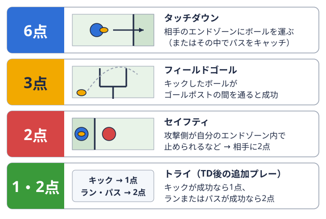
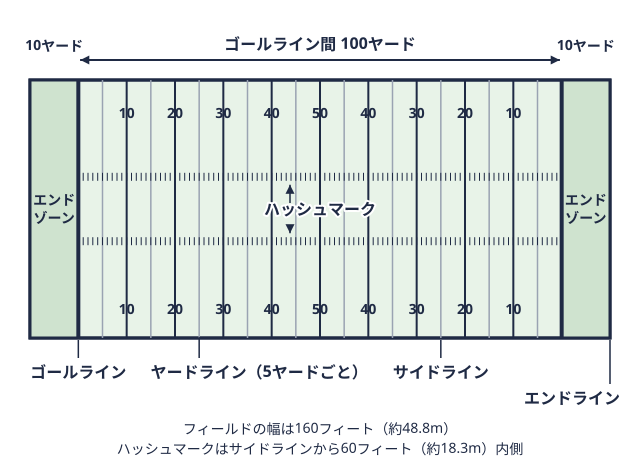
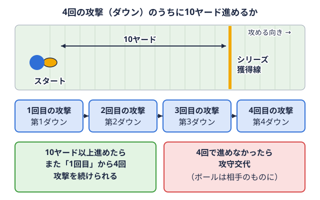
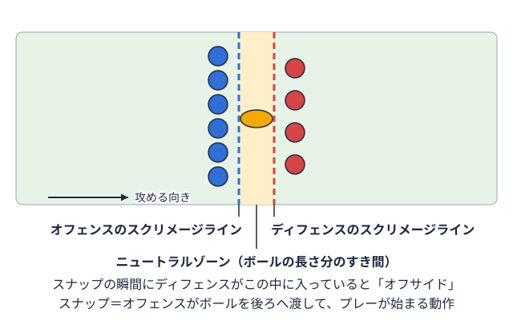

ポジション別 2026-10-12
アメフトDBのマンツーマンのコツ｜目線・間合い・足の運びの基本
「レシーバーの動きに付いていけない」「どこを見ればいいのか分からない」「振り切られた後、慌てて手が出て反則罰則が決まっているルール違反。審判が旗を投げて知らせ、陣地を下げられるなどの罰がある。用語辞典で見るを取られてしまう」——ディフェンシブバック守備の後ろ側で、相手のパスを防ぐ選手の総称。後方と外側を守る。 用語辞典で見る(DB)を担う、あるいは目指す大学アメフト部員、とくに未経験から競技を始めた人には、こうした悩みがつきものではないでしょうか。マンツーマンカバーは、担当レシーバーを1対1で追う場面が多く、技術の差が目に見えやすいぶん、苦手意識を持ちやすい領域です。この記事では、公開されている日本語・英語の解説をもとに、マンツーマンカバーの基本的な考え方を「構え」「目線」「足の運び」「ボールへの対応」の順に整理しました。
用語辞典で見る(DB)を担う、あるいは目指す大学アメフト部員、とくに未経験から競技を始めた人には、こうした悩みがつきものではないでしょうか。マンツーマンカバーは、担当レシーバーを1対1で追う場面が多く、技術の差が目に見えやすいぶん、苦手意識を持ちやすい領域です。この記事では、公開されている日本語・英語の解説をもとに、マンツーマンカバーの基本的な考え方を「構え」「目線」「足の運び」「ボールへの対応」の順に整理しました。
なお、この記事は競技全般の一般的な解説であり、実際のアライメントや練習メニューはチームごとに異なります。ここに書かれた内容を自己流で試す前に、所属チームの指導者・トレーナーの指導に従ってください。
DBとマンツーマンカバーの位置づけ
spaia「アメフトのポジション」では、DBは後方やサイドを担当し、相手のパスやランを止める役割のポジションとして紹介されています。そのうちコーナーバック守備の外側に立ち、パスを受けにくる相手選手に付いて、パスを防ぐ選手。用語辞典で見る(CB)について、Wikipedia(日本語版)の「コーナーバック」の項目では、主にワイドレシーバーフィールドの外側に広がり、投げられたパスをキャッチして陣地を進める選手。 用語辞典で見る(WR)へのパスを防ぐ役割で、プレーが始まってからレシーバーの動きに反応する必要があるため、スピード・敏捷性・反射神経が求められると説明されています。
用語辞典で見る(WR)へのパスを防ぐ役割で、プレーが始まってからレシーバーの動きに反応する必要があるため、スピード・敏捷性・反射神経が求められると説明されています。
守り方は大きく2種類に分けられます。ひとつは、守る人(担当レシーバー)を決めて追う「マンツーマンカバー」。もうひとつは、守る場所(ゾーン)を決めて、そこに入ってきた相手に対応する「ゾーンカバー」です。この記事で扱うのは前者で、担当を1人に絞って付いていく分、動き方の基本を押さえやすい反面、振り切られたときのリスクも見えやすい守り方です。
なお、チームによっては同じ「マンカバー」でも、周りの選手のブリッツラインの後ろに立つ守備選手も一緒に突っ込み、パスを投げる選手に迫る守り方。用語辞典で見るやセーフティ守備の最後方に立つ選手。また、攻撃側が自陣エンドゾーンで止められて相手に入る2点の得点もこう呼ぶ。 
構えと立ち位置——アライメント・レバレッジ・クッション
動き方の前に、まず「どこに立つか」が決まります。XandOLabsのMike Kuchar氏がUSA Footballのブログで紹介しているオフマンカバー(少し離れて構える形)の整理では、次の4つの原則が挙げられています。
| 原則 | 内容の要点 |
|---|---|
| アライメント | レシーバーからどれくらい離れて構えるか。同記事ではCB・セーフティはレシーバーから5〜7ヤード距離の単位で、1ヤードは約0.9メートル。フィールドには5ヤードごとに線が引かれている。  用語辞典で見る程度という目安が紹介されている |
| レバレッジ | レシーバーに対してどちら側に位置を取るか。セーフティの援護があるかどうかで変わる |
| クッション | レシーバーとの距離(余裕)。同記事では2〜3ヤード程度の機能的な余裕を保つことが紹介されている |
| ヒップ(腰) | レシーバーの進行方向を読む最も信頼できる手がかりとして挙げられている |
レバレッジとは、味方の援護やサイドラインフィールドの長い辺にある境界線。ボールを持った選手がここに触れるか出ると、その場でプレーが止まる。用語辞典で見るを味方につけて、相手が取りやすいコースを制限する考え方です。USA Footballの別のブログ(同じKuchar氏)では、プレス(ライン上で近く構える形)の場面について、援護となるディープのセーフティがいない場合、内側のレバレッジを失わないことが重要だと説明されています。サイドラインを「もう1人の守り手」として使い、QB攻撃の司令塔。作戦に合わせて、パスを投げたり、走る選手にボールを渡したりする。用語辞典で見るに難しい外側のルートを投げさせる、という考え方です。
ここで挙げた距離や位置はあくまで一例です。実際には、守備の組み方・相手のレシーバーの特徴・試合の状況によって変わりますので、自分のチームでの約束事を確認してください。
どこを見るか——目線は「腰」に置く
マンツーマン守備選手が、あらかじめ決めた1人の相手選手に付きっきりで守る方法。用語辞典で見るで最もよく挙がる悩みが「何を見ればいいか分からない」です。元NFL選手のMatt Bowen氏がNational Football Postで解説している内容では、目線はレシーバーの腰(ヒップ)に置くとされています。レシーバーは腰を開かずに急な切り返しをすることが難しいため、腰の動きがルートの方向を先に教えてくれる、という理由です。
Kuchar氏のUSA Footballブログでも、レシーバーの腰がルートの意図を読む最も確かな手がかりになるとして、つねに腰の動きを見ることが推奨されています。
プレスの場面では、目線の置き場所が少し変わります。USA Footballのプレス解説では、構えたときの目線はレシーバーの背番号の下側あたりに置き、そこから腰の動きを追うという流れが紹介されています。上半身の動きに惑わされず、低い位置に目を置くという考え方です。
なお、同記事によれば、目線は基本として低く保つ、という点が共通して強調されています。実際に何を見て、どこで見る位置を切り替えるかは、チームの教え方によって異なります。
足の運び——ペダル・ターン・ウィーブ
見る場所が決まったら、足の運びです。Kuchar氏の整理では、オフマンカバーの動きは次の流れで紹介されています。
- コントロールペダル: 最高速度の約75%程度で下がるバックペダルです。レシーバーの動きを見ながら、いつでも反応できる余裕を残します。
- スピードペダル: 最高速度に近いバックペダルです。レシーバーが縦に加速してきたときに、間合いを保つために使います。
- マンターン: 腰を回転させて、レシーバーと並んで走る動きです。
さらにBowen氏は、ルートの切り返し(ブレイク)の多くは12〜15ヤードで起こると述べたうえで、その深さでも切り返しがなければ、向きを変えて走ることが基本だと紹介しています。ゴールラインフィールドの両端にある、エンドゾーンとの境目の線。ボールを持ってここを越えると得点になる。用語辞典で見るまで止まらない可能性があるため、後ろを向いて並走するほうが安全だ、という考え方です。
姿勢については、Bowen氏が「パッド(肩のプロテクター)の位置を低く、足の真上に保つ」ことを挙げています。同氏は、パッドの位置が高くなると腰を開く動きが遅れ、切り返しに反応できなくなると説明しています。
足の運びを練習するドリルとして、Kuchar氏は次のようなものを紹介しています。
- スロットルドリル: レシーバーが切り返したところで、守り手は腰を落としてブレーキをかける
- スロットル&ブレイクドリル: ブレーキに加え、足を踏み込んでから横方向に切り返す
- ウィーブドリル: レシーバーがジグザグに動き、守り手は肩を正面に向けたまま、バックペダルでレバレッジを保つ
これらは練習の考え方の一例です。新しいドリルを自己流で取り入れるのではなく、チームの指導のもとで取り組んでください。
ボールが投げられたら——「ポケット」を狙う
レシーバーに追い付けなかったとき、慌てて腕を出すと反則につながる場合があります。Bowen氏は、振り切られた場合でも、レシーバーの腰の位置まで戻って「インフェイズ(並んだ位置)」に入り、ボールとレシーバーの手が出会う場所(ポケット)に手を出すことを紹介しています。
守備側パス・インターフェアランスは、日本の規則でも反則として扱われます。反則の種類と罰退反則の罰として、そのチームの陣地が後ろへ下げられること。5・10・15ヤードなど反則ごとに決まっている。用語辞典で見るの考え方は当サイトのアメフトの反則一覧で整理しています。実際の適用は日本アメリカンフットボール協会の公式規則書によりますので、最新版を確認してください。
ボールが投げられたあとの動きについては、高校監督のBob Pieper氏がGridiron Strategiesに寄せた「DBの10の戒め」でも、「ボールの最高点で攻める」ことが挙げられています。ボールの軌道を読み、最も高い位置で触る意識を持つ、という考え方です。
味方との連携とコミュニケーション
マンツーマンは1対1の戦いに見えますが、チーム全体の約束事の上に成り立っています。Pieper氏の「10の戒め」では、1番目に「チームメイトとコミュニケーションをとる」が挙げられており、さらに攻撃側の傾向を知ること、ダウン攻撃1回分のこと。ボールが動き出してから止まるまでが1回で、攻撃側は4回まで続けて行える。 
具体的には、次のような確認がチーム内で行われている場合があります。
- 自分の担当レシーバーと、援護(ディープのセーフティなど)の位置
- 隊形が変わったときの担当の受け渡し
- ブリッツが入るかどうか(入る場合は、QBが投げるまでの時間が短くなる)
ブリッツが入る場合は、LB守備の最前列のすぐ後ろに立ち、走るプレーを止め、パスも守る選手。守備の要といわれる。用語辞典で見るやDL守備の最前列に並ぶ選手たち。相手のラインに当たって走るプレーを止め、パスを投げる選手に迫る。用語辞典で見るの動きを知っておくと理解しやすくなります。当サイトのアメフトLBの読み方と動き方とアメフトDLのパスラッシュ技術もあわせて参考にしてください。
相手を知る——WRの動きを理解する
マンツーマンは、相手のルートの組み方を知っているほど読みやすくなります。レシーバー側の基本は、当サイトのアメフトWRのルートランニング基礎で整理しています。守る側がレシーバーの視点を知ると、腰の開き方や切り返しの準備の「予兆」をイメージしやすくなります。
また、QBがどのタイミングで投げるかも、守り方に影響します。QBの視点はアメフトQBに必要な能力と練習法も参考になります。
安全面——頭を下げて当たらない
DBは、ボールキャリアを止めるタックルボールを持つ相手を、体を使って止めること。攻撃のラインの端に立つ選手の呼び名でもある。用語辞典で見るの場面もあります。JAFAが公表する頚部外傷の予防に関する情報では、顔を上げた状態でコンタクトする「ヘッズアップ」が重視されています。頭頂部で当たる接触は、相手だけでなく自分自身にも重大な負傷を生じさせるおそれがあるとされます。タックルの基本はアメフトのタックルの正しいフォームと安全な当たり方にまとめています。
また、関東学生アメリカンフットボール連盟(KCFA)の公式サイトには、日本学生協会が作成した安全・安心マニュアルへの案内があります。脳震盪頭や体への強い衝撃で、脳が頭の中で揺さぶられて起こる状態。頭痛や吐き気、意識の異常が出ることがある。用語辞典で見るへの備えはアメフトの脳震盪対策とヘッドギアで整理していますので、あわせて確認してください。
練習で意識したいこと
ここまでの内容を、練習でどう活かすかを一般論として整理します。新しいドリルを紹介するものではなく、紹介した考え方を練習に取り入れるときの視点です。
- 目線を1つに決めて反復する: 「腰を見る」と決めたら、まずはその1つを繰り返します。目線が定まらないうちは、切り返しへの反応が遅れる原因になりやすいと考えられます(編集部の整理)。
- 姿勢の高さを確認する: Bowen氏が挙げる「パッドを低く、足の真上に」を、練習の映像などで確認する方法があります。実施する場合は、指導者と一緒に行うと、気づきを得やすくなります。
- 「振り切られた後」の動きも練習する: ミスをなくすことだけでなく、ミスの後にポケットに手を出す動きを練習しておくと、反則を減らす手がかりになります。
- 反応と判断を分けて考える: レシーバーの動きが見えていないのか、見えているのに足が付いていかないのかを切り分けると、改善する点が見えやすくなる場合があります。
関東TOP8・BIG8でDBを目指す部員へ
同じKCFAのTOP8・BIG8に所属するチームでも、守備の組み方やDBに求められる役割、対戦相手のパスの傾向は異なります。自分が加わる、あるいは対戦するチームの特徴を調べる入口として、次のページを活用できます。
- TOP8 チーム一覧 ― TOP8所属チームのチームページへの入り口
- BIG8 チーム一覧 ― BIG8所属チームのチームページへの入り口
- TOP8 日程・結果 ― 直近の試合結果と今後の対戦カード
- TOP8 順位表 ― 現在の順位と勝敗
試合を観戦するときは、スナッププレー開始の動作。地面に置いたボールを、攻撃側の選手が後ろへ渡す。 
まとめ
DBのマンツーマンカバーは、立ち位置・目線・足の運び・ボールへの対応という順で整理できます。
- マンツーマンは「人」を追う守り方で、アライメント・レバレッジ・クッションの3つを基本にした構えから始まる
- 目線はレシーバーの腰に置き、姿勢は低く、パッドを足の真上に保つ
- 足の運びは、バックペダル(コントロール・スピード)からマンターンへ、状況に応じて切り替える
- 振り切られたときは慌てて腕を出さず、並走してポケットに手を出す。守備側パス・インターフェアランスは反則になる
- ヘッズアップなど安全面の基本を守り、チームの指導者の指導に従って練習する
すべてを一度に身につけようとせず、まず自チームでの担当と目線の置き場所を確認し、1つの動きに決めて反復する、という順番で取り組むのが取りかかりやすい進め方です。
参考リンク
- アメフトのポジション | spaia
- コーナーバック | Wikipedia
- Reading the wide receiver's hips to teach man coverage | USA Football
- Training the eyes of a defensive back in press coverage | USA Football
- Coaching session: Man coverage | National Football Post
- 10 commandments for DBs offers insight | Gridiron Strategies
- 公式規則書 | 日本アメリカンフットボール協会
- 安全・安心マニュアル | 関東学生アメリカンフットボール連盟
本記事は、spaia・Wikipedia・USA Football・National Football Post・Gridiron Strategies・JAFA・KCFAが公開している情報をもとに、編集部が構成した一般的な解説ガイドです。英語ソースの内容は各指導者個人の見解であり、技術の向き不向きや効果には個人差・チーム差があります。必ずしも同じ内容が当てはまるとは限りません。練習への導入や頚部・脳震盪などの安全面の判断は、所属チームの指導者・トレーナー・医療関係者の指示に従ってください。
この部活・競技を応援したい方へ
協賛・応援はこちらから。
取材してほしい部活を募集中
あなたの部活・チームを取材してほしい方はこちらから。
オフシーズン・引退後に、長期インターンという選択
部活で培った力を実務で試す。16タイプ診断（30秒）で合う企業がわかります。